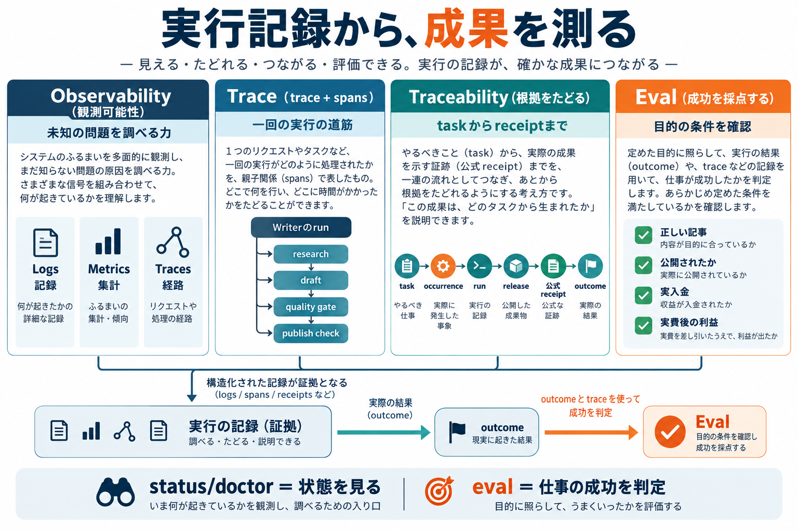
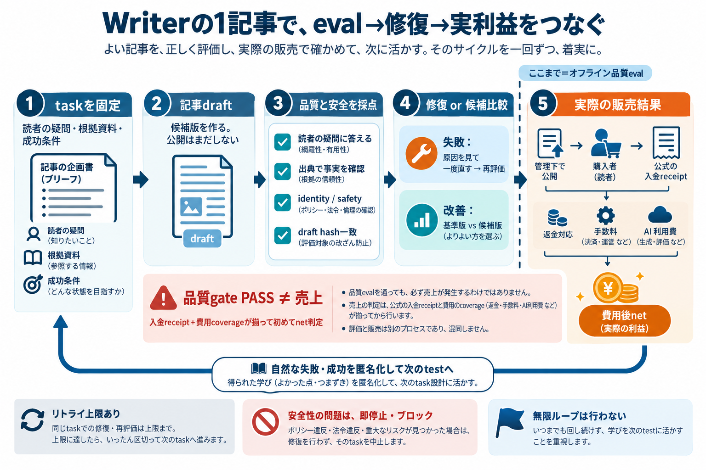

先に結論
Evalは「うまい返事」ではなく、仕事が成功したかを決める約束です
最初に成功条件を決め、実行の記録と実際の結果をつなぎ、同じ条件で採点する。失敗を一つずつ再現できれば、修正が本当に効いたかを確かめられます。
task完了 頼まれた作業が終わったか。
outcome 外の世界に何が残ったか。
経済成果 settled入金から返金・fee・実費を引けるか。
01 The foundation
log・trace・observability・traceability・evalは、別の役目を持ちます 記録を集めるだけでは、仕事の成功を判定できません。

図1。記録を見つけ、実行をたどり、成果を成功条件と照らします。
言葉 簡単に言うと Life Managerの例
log 起きたことの時刻付き記録。 Writerのquality gateがFAILした。 trace 一回の仕事の処理経路。 research → draft → reader gate → publish check。 observability logs・metrics・tracesから原因を調べる力。 どのowner、release、phaseで止まったかを探す。 traceability 依頼から実行・receipt・成果まで根拠を結ぶこと。 task → occurrence → run → receipt → financial record。 eval 実際の結果を事前に決めた条件で採点すること。 記事の公開、購入receipt、費用coverageを個別に確認する。
OpenTelemetryはtelemetryの共通標準です。logsは出来事、metricsは集計、tracesは処理の親子関係を記録します。traceは観測の手段で、traceabilityは証拠を後からたどれる状態です。evalはその証拠を使って仕事の結果を採点します。OpenTelemetry observability primer
lm-loop status --explain、health --json、doctorは、状態や失敗runを見つける入口です。workerが起動していることや、CLIがexit 0を返したことだけでは、納品・公開・入金の成功を証明しません。
覚えておくこと： healthは「プロセスやownerはどうなっているか」を見るもの。evalは「依頼したtaskの成功条件を満たしたか」を決めるもの。売上は公式receiptと費用が揃った時にだけ判定します。
現行runtime eventにはrun・owner・occurrence・release・error・next action・receipt/readback参照があります。今回確認した範囲では、span treeを持つOpenTelemetry SDK計装は見つかっていません。まず既存eventをつなぎ、必要が実証されてから新しいbackendを検討します。
02 A small example
一つのcaseは、一つの失敗を見つける形にします 「記事が良いか」だけでは採点者も修正担当も、何を直すべきか分かりません。
失敗例 · FAIL 根拠にない数字を記事へ書いた 入力資料に販売件数はないのに、下書きが「購入が増えた」と断定した。主張に対応するevidenceがないため、事実確認graderがFAILにする。
成功例 · PASS 確認できない情報を断定しなかった 下書きは資料にある情報だけを使い、欠けている販売結果をunknownとして残した。hashが一致する評価receiptも保存された。
この例の目的は、一般的な「文章の良さ」を採点することではありません。特定の失敗を再現し、同じ失敗を修正後に止められたかを確認します。
{
"case_id": "writer-unsupported-claim-example",
"provenance": "illustrative_synthetic",
"failure_mode": "unsupported_numeric_claim",
"expected": {
"claim_has_evidence": "fail",
"draft_hash_bound": true,
"revenue_outcome": "unknown"
}
}架空の説明例です。Life Managerの実case IDや新しいschemaではありません。実caseは自然traceから作り、PIIとsecretを除いた参照だけを保存します。
case cardに先に書くこと
1 taskと初期状態
何を頼み、どの資料・tool・予算が使えるか。
2 期待する終状態
どのartifactや公式receiptがあれば完了か。
3 失敗条件
何が起きたらFAIL、何が分からなければUNKNOWNか。
4 証拠とprovenance
自然trace・derived case・synthetic fixtureを区別する。
03 What to measure
一つの点数に潰さず、task・安全・金銭を分けて報告します 評価対象ごとに、成功を証明する根拠が違います。
1 task completion
依頼の成果物ができたか。agentの「終わりました」という文章だけで判定しない。
2 effect integrity
外部送信や公開のreceiptがあるか、重複・不明effectが残っていないか。
3 settled net
settled外部収入から返金・fee・同期間の実費を引く。coverage不足ならunknown。
4 quality
主張の根拠、読者の課題、形式など、caseに定めた内容を採点する。
5 latency and cost
完了までの時間、model/API/tool費用を同じepisodeへ結び付ける。
6 human intervention
人が判断・操作・救済した回数と所要時間を記録する。記録欠落は0回にしない。
採点者を役割で分ける
採点者 向く項目 例
code 客観的に確認できるもの hash、schema、receipt ID、重複、公開status、金銭算術 LLM judge 解釈が必要なもの 主張が資料を正しく説明するか、記事が読者の質問に答えるか human expert judgeを較正する基準 blind labels、false-pass/false-failの原因確認
原則： コードで判定できる条件をLLM judgeに任せない。judgeは正解そのものではなく、専門家の判定例と比べてから使います。
baselineとcandidateは同じ条件で比べる
入力・tool・model/version・release・予算・graderを固定し、caseごとに複数回試します。tuning/devで調整し、held-outは最後の比較まで触りません。公開済みfixtureのheld-out labelは秘密テストではありません。標本が小さければ順位を作らず、件数と不確かさを報告します。
SELF-HEALING 失敗から安全に戻れたか recovery後の完了、重複、再発、復旧時間、人の介入を評価します。安全にholdしたことと業務完了は別です。
SELF-IMPROVEMENT baselineより良くなったか 一つの候補を固定graderとheld-outで比較し、品質・安全・cost-complete netを別々に見ます。
04 Life Manager pilot
18業務を比べ、最初はWriterの一記事から始めます 選ぶ理由は「18業務で最も簡単だから」ではなく、既存のevalとbounded recoveryを使って公開前に反復できるからです。

図2。品質評価を先に行い、公開・入金・費用は別の公式outcomeとして確認します。
候補 強み 最初に選ばない理由
Writer · 採用 既存quality gate、hash-bound artifacts、bounded recovery、baseline/candidate実験。 金融・費用adapterは一部実装。quality PASSは利益の証明にならない。 Agent Economy catalog上は収益・金融・費用adapterが実装済み。 19 jobsを含む広いlane。TaskMarketの外部報酬証明は後段。 PromptBase catalog上1 jobで範囲が小さい。 金融・費用adapterとbrowser経路が未完。 Connector 1 jobでregistration receiptを測りやすい。 non-economic。収益benchmarkのpilotではない。 Gig — Coconala funnel・financial・costのadapterはcatalog上実装済み。 応募・交渉・納品・決済の複数stageと外部effectを含む。
18業務すべてのcatalog readinessを見る
表の実装statusはコードcatalogのmetadataです。本番receipt、自然稼働、売上を意味しません。
# 業務 job数 funnel / finance / cost
1 Gig — Coconala 7 実装 / 実装 / 実装 2 Gig — Lancers 7 実装 / 実装 / 実装 3 Gig — CrowdWorks 5 実装 / 実装 / 実装 4 Gig — Mercor 3 一部 / 一部 / 一部 5 PromptBase 1 一部 / 未 / 未 6 Writer 7 実装 / 一部 / 一部 7 Affiliate 6 実装 / 未 / 未 8 Investment 4 実装 / 一部 / 一部 9 Agent Economy 19 実装 / 実装 / 実装 10 Job Hunter 4 一部 / 一部 / 一部 11 Fundraiser 1 実装 / 未 / 未 12 Connector 1 対象外 / 対象外 / 対象外 13 Self-Build / Product Improvement 4 一部 / 未 / 未 14 Mobile App Loops 23 実装 / 未 / 未 15 eBook 4 一部 / 未 / 一部 16 Capafy 11 実装 / 未 / 未 17 LINE Sticker 3 実装 / 未 / 未 18 CFO 3 集約役
最初のWriter caseで何を見るか
一記事・一言語・一媒体の公開前stageを選び、読者の問い、根拠資料、禁止claim、draft hash、grader版を固定します。最初のcaseは自然traceから選び、failure modeはtrace reviewで決めます。最初から「記事の品質」という曖昧なlabelだけでevalを作りません。
task: 資料に支えられた記事draftを作る。quality/safety: 根拠のないclaim・identity漏えい・未確認を断定しない。effect: 公開は別stage。外部操作のunknownは公式readbackまでholdする。money: purchase/settlement・refund・fee・AI/API costが結ばれるまでnetはunknown。
最初のcaseと並行して、judgeをdomain expertのblind labelsで較正し、false-passとfalse-failを分けて数えます。既存のWriter learning experimentはbaselineと一項目だけ異なるcandidateを比較し、各caseを3回以上試す契約を持っています。これを再利用します。
現在の評価基盤： LM-EABは5件の公開synthetic fixtureを使うoffline contract evaluatorです。financial-recordの採点契約は検査しますが、agentを動かしたり実収益を測ったりはしません。natural performance benchmarkはこれから作ります。
From current cursor to open reproducibility
E01を閉じてから、case・修復・比較を一つずつ積み上げます
これは現在の状態を要約した順序です。実行状態の正本はUnified SSOT。Writer pilotを理由に、既存の収益優先順や進行中ownerは変更しません。
E01 · runtime採用と自然評価 欠測net修正のloaded SHAを読み、欠測が利益やゼロへ変わらない自然評価を確かめる。
Writer · traceレビューとfailure taxonomy ownerを重複させず、一つの公開前sliceを選び、利用可能な自然runから実際の失敗を分類する。
E02/E03 · outcome joinと実case task completion・effect integrity・settled net・cost・latency・介入を分け、自然traceからケースを増やす。
E04 · frozen baselineとgrader較正 version/hash、dev/held-out/challenge、expert labels、複数trial、不確かさを保存する。
H01–H04 · bounded self-healing 自然failure → owner-scoped intent → no-replayの照合 → 最小修正 → 次のnatural outcomeを結ぶ。
I01–I04 · bounded self-improvement 一候補ずつ同じevalで比較し、safetyとcost-complete条件を通るものだけcanaryへ進める。
E05/E06 · 別harness・外部再現・報告 第三者が同じcase/versionを実行できることを確かめ、実測と限界を公開する。lab adoptionは外部証拠が必要。
06 For independent labs
論文やREADMEを出すだけでは、使われるbenchmarkになりません 別のteamが同じ問い・環境・採点規則で再現でき、結果の限界まで分かる必要があります。
A Versioned tasks
case・runner・grader・model/tool/budgetの版とhash。
B Independent labels
LLM judgeと専門家の一致・誤りを別splitで測る。
C Real outcomes
公式receipt、settlement、費用coverage。模擬報酬と分ける。
D Replication
別harness・別teamの再実行と、再現できなかった条件も報告。
LM-EABの合成fixtureは、会計の境界をテストする第一歩です。公開benchmarkとしてモデルやagentの経済能力を比較するには、自然task family、実outcomeのprovenance、fairな予算とtool条件、独立再現が別途必要です。現在は設計・実装途中で、AI labの採用実績はまだありません。
What counts as evidence
「動いた」と「役に立った」を、同じ言葉で済ませない。
まず一つの実際の失敗を読み、再現できるevalへ変える。修正が通ったら同条件で比べる。自然runのtask・外部effect・公式receipt・費用までつないだ時、初めて人の生活や経済にどんな成果を出したかを語れます。
品質gateの合格は実収益の証拠ではありません。LM-EABの現行fixtureもagent性能benchmarkではありません。この記事は設計と実装の現状を説明するもので、lab採用・収益保証・AGI達成を主張しません。
ページの先頭へ戻る ↑